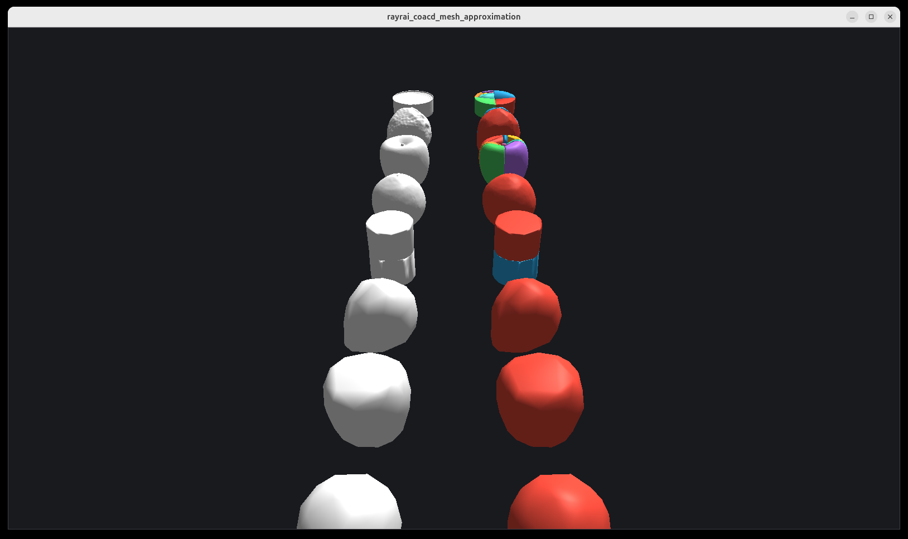

Rayrai Example: COACD Mesh Approximation
Overview
Compares original triangle meshes with their COACD convex decomposition output. Use it to visually inspect convex parts generated from YCB and Minitaur meshes.
Screenshot

Binary
CMake target and executable name: rayrai_coacd_mesh_approximation.
Run
Build and run from your build directory:
cmake --build . --target rayrai_coacd_mesh_approximation
./rayrai_coacd_mesh_approximation
On Windows, run rayrai_coacd_mesh_approximation.exe instead.
This example uses the in-process rayrai renderer (no external client required).
Details
Loads several YCB and Minitaur OBJ meshes.
Builds COACD convex parts with
raisim::CoacdOptionsand prints original triangle counts and part counts.Displays original meshes in gray beside colored convex decomposition parts.
Source
#include <array>
#include <cmath>
#include <cstdint>
#include <iostream>
#include <limits>
#include <memory>
#include <string>
#include <vector>
#include <glm/glm.hpp>
#include "rayrai/example_common.hpp"
#include "rayrai/OpenGLMesh.hpp"
#include "rayrai_example_resources.hpp"
#include "raisim/World.hpp"
#include "raisim/object/singleBodies/Mesh.hpp"
namespace {
struct Bounds {
glm::vec3 min{0.0f};
glm::vec3 max{0.0f};
glm::vec3 center{0.0f};
float span = 1.0f;
};
Bounds computeBounds(const std::vector<float>& vertices) {
Bounds b;
const float inf = std::numeric_limits<float>::infinity();
b.min = {inf, inf, inf};
b.max = {-inf, -inf, -inf};
for (size_t i = 0; i + 2 < vertices.size(); i += 3) {
glm::vec3 p{vertices[i], vertices[i + 1], vertices[i + 2]};
b.min = glm::min(b.min, p);
b.max = glm::max(b.max, p);
}
if (!std::isfinite(b.min.x) || !std::isfinite(b.max.x)) {
b.min = {-0.5f, -0.5f, -0.5f};
b.max = {0.5f, 0.5f, 0.5f};
}
b.center = 0.5f * (b.min + b.max);
const glm::vec3 ext = b.max - b.min;
b.span = std::max({ext.x, ext.y, ext.z, 1e-4f});
return b;
}
std::vector<Vertex> makeVertices(const std::vector<float>& vertices,
const std::vector<std::uint32_t>& indices,
const Bounds& bounds,
float targetSpan) {
std::vector<Vertex> out(vertices.size() / 3);
const float scale = targetSpan / bounds.span;
for (size_t i = 0; i < out.size(); ++i) {
glm::vec3 p{vertices[3 * i], vertices[3 * i + 1], vertices[3 * i + 2]};
out[i].Position = (p - bounds.center) * scale;
out[i].Normal = {0.0f, 0.0f, 0.0f};
out[i].TexCoords = {0.0f, 0.0f};
}
for (size_t i = 0; i + 2 < indices.size(); i += 3) {
const auto i0 = indices[i];
const auto i1 = indices[i + 1];
const auto i2 = indices[i + 2];
if (i0 >= out.size() || i1 >= out.size() || i2 >= out.size())
continue;
const glm::vec3 e1 = out[i1].Position - out[i0].Position;
const glm::vec3 e2 = out[i2].Position - out[i0].Position;
const glm::vec3 n = glm::cross(e1, e2);
out[i0].Normal += n;
out[i1].Normal += n;
out[i2].Normal += n;
}
for (auto& v : out) {
const float len = glm::length(v.Normal);
v.Normal = len > 1e-8f ? v.Normal / len : glm::vec3(0.0f, 0.0f, 1.0f);
}
return out;
}
std::shared_ptr<OpenGLMesh> makeMesh(const std::vector<float>& vertices,
const std::vector<std::uint32_t>& indices,
const Bounds& bounds,
float targetSpan,
const glm::vec4& color) {
std::vector<unsigned int> glIndices(indices.begin(), indices.end());
auto mesh = std::make_shared<OpenGLMesh>(
makeVertices(vertices, indices, bounds, targetSpan), glIndices, std::vector<Texture>{}, color);
mesh->baseColor = color;
mesh->material.baseColorFactor = color;
mesh->material.type = raisin::Material::Type::SIMPLE_COLOR;
return mesh;
}
std::shared_ptr<std::vector<std::shared_ptr<OpenGLMesh>>> makeMeshList() {
return std::make_shared<std::vector<std::shared_ptr<OpenGLMesh>>>();
}
} // namespace
int main(int argc, char* argv[]) {
ExampleApp app;
if (!app.init("rayrai_coacd_mesh_approximation", 1600, 900))
return -1;
auto world = std::make_shared<raisim::World>();
auto viewer = std::make_shared<raisin::RayraiWindow>(world, 1600, 900);
viewer->setBackgroundColor({24, 26, 30, 255});
viewer->setFogDensity(0.0f);
viewer->setShadowOrtho(8.0f, 0.1f, 40.0f);
viewer->setShadowCenterOffset(4.0f);
raisim::CoacdOptions options;
options.threshold = 0.04;
options.maxConvexHull = 12;
options.preprocess = "off";
options.sampleResolution = 1200;
options.mctsNodes = 12;
options.mctsIteration = 80;
options.mctsMaxDepth = 3;
options.merge = true;
options.maxConvexHullVertex = 64;
options.seed = 7;
const std::vector<std::string> meshFiles = {
"ycb/002_master_chef_can/google_16k/textured_vhacd.obj",
"ycb/007_tuna_fish_can/google_16k/textured.obj",
"ycb/012_strawberry/google_16k/textured.obj",
"ycb/013_apple/google_16k/textured.obj",
"ycb/017_orange/google_16k/textured.obj"
};
const std::array<glm::vec4, 10> palette = {
glm::vec4{0.95f, 0.30f, 0.24f, 0.78f}, glm::vec4{0.20f, 0.70f, 0.95f, 0.78f},
glm::vec4{0.32f, 0.86f, 0.42f, 0.78f}, glm::vec4{1.00f, 0.76f, 0.18f, 0.78f},
glm::vec4{0.72f, 0.46f, 0.96f, 0.78f}, glm::vec4{0.98f, 0.48f, 0.72f, 0.78f},
glm::vec4{0.30f, 0.86f, 0.80f, 0.78f}, glm::vec4{0.92f, 0.58f, 0.24f, 0.78f},
glm::vec4{0.62f, 0.82f, 1.00f, 0.78f}, glm::vec4{0.82f, 0.88f, 0.34f, 0.78f}
};
const float targetSpan = 0.62f;
const float rowSpacing = 1.0f;
const float colXOriginal = -0.62f;
const float colXApprox = 0.62f;
const float startY = 2.0f;
for (size_t row = 0; row < meshFiles.size(); ++row) {
const std::string path = rayraiRscPath(argv[0], meshFiles[row]);
std::vector<float> vertices;
std::vector<std::uint32_t> indices;
raisim::Mesh::loadMesh(path, vertices, indices, 1.0);
const Bounds bounds = computeBounds(vertices);
const float y = startY - static_cast<float>(row) * rowSpacing;
auto originalMeshes = makeMeshList();
originalMeshes->push_back(makeMesh(vertices, indices, bounds, targetSpan, {0.72f, 0.76f, 0.82f, 1.0f}));
auto original = viewer->addVisualCustomMesh("original_" + std::to_string(row), originalMeshes);
original->setPosition(colXOriginal, y, 0.8f);
original->setDetectable(true);
auto* approxObject = world->addMesh(path, 1.0, 1.0, "",
raisim::MeshCollisionMode::CONVEXIFY, 1, 0, options);
approxObject->setPosition(1000.0 + double(row), 1000.0, 1000.0);
auto approxMeshes = makeMeshList();
const auto& parts = approxObject->getCoacdConvexParts();
for (size_t i = 0; i < parts.size(); ++i) {
approxMeshes->push_back(makeMesh(parts[i].vertices, parts[i].indices, bounds, targetSpan,
palette[i % palette.size()]));
}
auto approx = viewer->addVisualCustomMesh("coacd_" + std::to_string(row), approxMeshes);
approx->setUseMeshColor(true);
approx->setPosition(colXApprox, y, 0.8f);
approx->setDetectable(true);
std::cout << meshFiles[row] << ": original triangles=" << indices.size() / 3
<< ", coacd parts=" << parts.size() << std::endl;
}
auto& camera = viewer->getCamera();
camera.target = {0.0f, 0.0f, 0.8f};
camera.position = {0.0f, -4.6f, 4.0f};
camera.yaw = 90.0f;
camera.pitch = -36.0f;
camera.setCameraFixedTarget(true);
camera.setCameraFixedDistance(true);
while (!app.quit) {
app.processEvents();
if (app.quit)
break;
world->integrate();
app.beginFrame();
app.renderViewer(*viewer);
app.endFrame();
}
viewer.reset();
app.shutdown();
return 0;
}